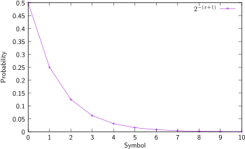

Unary coding
Vicente González Ruiz
January 6, 2020
Contents
1 Ideas
- Used then the distribution of probability of the symbols follows a geometric
distribution.
- It is a particular case of the Huffman code where the number of bits of
each code-word (minus one) is equal to the index of the symbol in the
source alphabet. Example:
- The unary coding is only optimal when (see Equation
Eq:symbol_information)
|
| (Eq:Unary) |
where .
